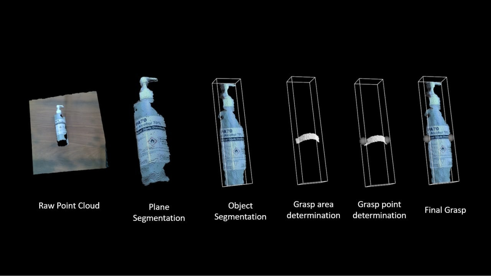
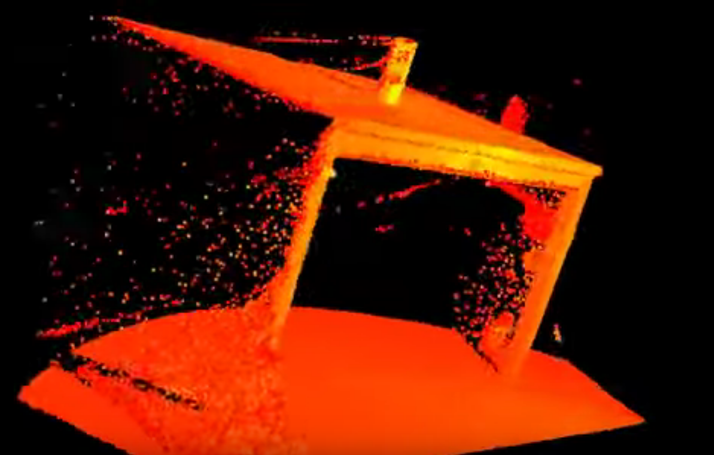
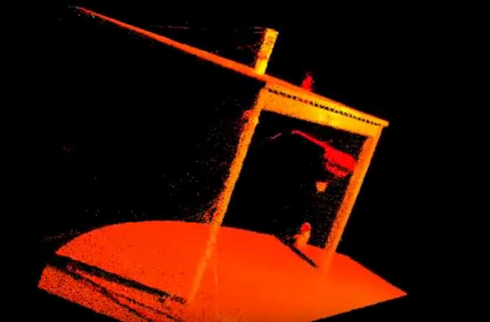

Grasp Planner¶
Methodology
The methodology for the grasp planner can be broken down into several steps.
1) Point Cloud filtering
2) Plane Segmentation
3) Object Segmentation
4) Grasp Area determination
5) Grasp point determination
6) Grasp Ranking
7) Best Final Grasp
1) Point Cloud filtering
Raw pointclouds generally include areas that are unnecessary and include alot of noise. Therefore, the user given the option to filter to an area of the raw pointcloud that they may want to focus on. This is shown later in the Grasp Planner Configuration page
Once the desired area of the pointcloud is specified, noise within specified pointcloud is then removed. This is done through a `StatisticalOutlierRemoval filter<https://pcl.readthedocs.io/en/latest/statistical_outlier.html>`__
Before Noise Removal |
After Noise Removal |
|---|---|
 |
 |
2) Plane Segmentation
3) Object Segmentation
Every individual object within the filtered pointcloud is segmented and the grasp planner does planning for each object.
4) Grasp Area determination
Area of which the planner will take into account for determining grasp points depending on the number of fingers/number of suction cups
5) Grasp point determination
Exact points of where the middle of the finger/suction cup should be for that specific grasp
6) Grasp Ranking
There are many possibe grasping configurations that the grasp planner has taken into account. The quality of those grasps are then ranked based of a metric. The metrics of the individual end-effector types can be found on their respective pages
Finger Grasps and Suction Grasps
7) Best Final Grasp
The pose of the top ranked grasp is then published for Grasp Execution